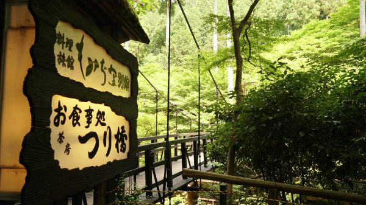
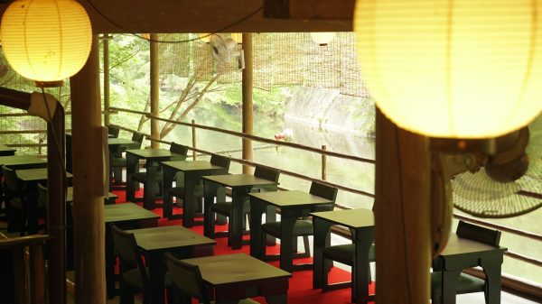
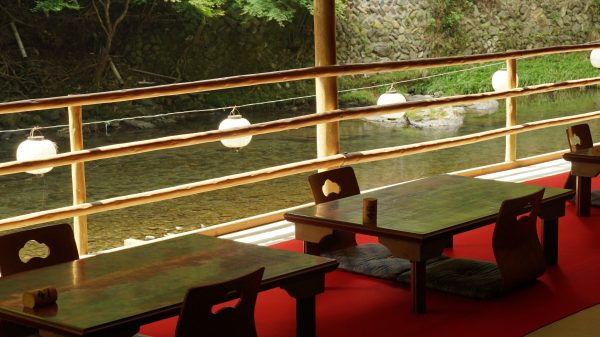
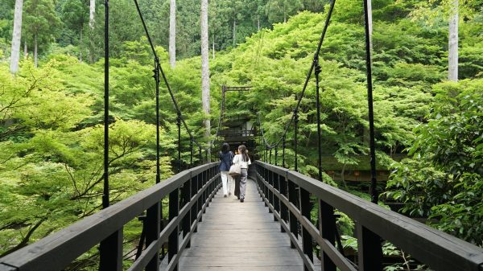
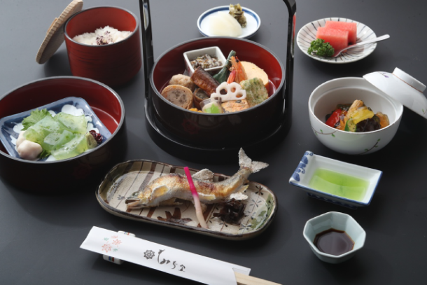
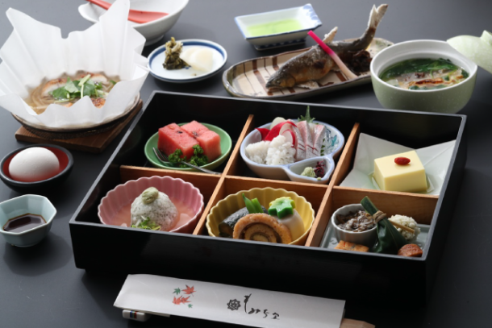

最新の情報は 公式サイトのツアーページ をご覧ください。
京都・高雄「もみぢ家」で川床ランチと金閣寺＆高雄エリア フリー観光
※大人・小人同額です。
本ツアーの募集は終了いたしました
＜お問合せフォームはこちら▶＞
＜MKトラベルTOPはこちら▶＞
＜おすすめツアー一覧はこちら▶＞
| 2～3名様/1台利用 | 22,000円 |
| 4～5名様/1台利用 | 17,000円 |
| 6～9名様/1台利用 | 16,000円 |
| ★お料理アップグレードについて |
| 川床ランチは、おひとり様＋4,400円（税込）で「川床御膳」へアップグレード可能です。 ※アップグレードはグループ皆様同一内容でのお申込みとなります。一部のみの変更は承っておりませんのでご了承ください。 |
夏の京都で、涼やかに過ごす一日を。
自然豊かな高雄エリアで川床ランチと観光をお楽しみいただく、毎年人気のタクシーツアーです。
送迎場所は京都市内のお好きな場所をご指定いただけますので、アクセスもラクラク(一部エリア除く)。
ツアーの始まりは、黄金に輝く世界遺産、金閣寺へ。
美しい庭園とともに、京都を代表する名所をゆったりをご覧いただけます。
その後は、京都の奥座敷・高雄へ。
老舗旅館 もみぢ家 別館にて、川のせせらぎを聞きながら楽しむ川床ランチをご用意。
街中よりもひんやりとした空気のなか、夏の京都ならではの特別なひとときをお過ごしください♪
さらに今年はおひとり様+4,400円(税込)でお料理のアップグレード※も可能！
ちょっぴり贅沢なランチタイムをお楽しみいただけます。
午後は、自然豊かな高雄エリアを貸切タクシーで自由に観光！（約2時間）。
神護寺、西明寺、高山寺など、歴史ある寺院めぐりはもちろん、のんびりお散歩するのもおすすめです。
タクシー付きだから移動も快適＆効率的。
行き先は当日ドライバーにご相談OK◎
ちょっぴり贅沢な、夏の暑さを忘れる涼やかな大人の小旅行へ出かけませんか？
※アップグレードはグループのみなさま同一内容でお申し込みください
| おすすめポイント |
| ・人気の金閣寺へ効率よく立ち寄り！初めての京都観光にもぴったりの王道スポットです。 ・お料理アップグレードで“ちょっと贅沢”も叶う✨＋4,400円でワンランク上のランチに。特別な日にもおすすめ。 ・高雄エリアは約2時間のフリー観光♪神護寺・西明寺・高山寺など、行き先はドライバーに相談OK◎ ・夏の京都ならではの特別な体験をお楽しみください♪ |
行程
| 時間 | 場所 |
| 10:00 | 京都市内（ご指定の場所） |
| 10:30 | 金閣寺 |
| 11:30 | もみぢ家 別館 |
| 12:30 | 高雄エリア ＜フリー観光／約120分＞ ※モデルコースを下部に掲載 |
| 15:30 | 京都市内（ご指定の場所） |
◆送迎エリア：京都市のみ
※京都市の次のエリアは本件対象外とさせていただきます。
・北区中川・小野・杉阪・真弓・大森・雲ヶ畑
・右京区京北・嵯峨清滝・嵯峨水尾・嵯峨越畑・嵯峨樒原
・左京区花脊・広河原・久多・大原
※高雄エリア フリー観光中の拝観料等は含まれておりません。
※渋滞等で予定通りの滞在時間をお取りすることができない場合がございます。予めご了承ください。
※ご予約いただいた段階で、「もみぢ家 / 川床ランチ」が満席の場合は、ご予約をお断りする場合がございます。予めご了承ください。
もみぢ家（写真はイメージです）
-

-

-

-

-

川床ランチ
-

川床御膳（アップグレード）
川面が反射してキラキラしてたり、青もみじが机に反射して机が青もみじ色になってるのええな、って思った時の動画です
高雄 もみぢ家別館
2024.6 X担当者 撮影#MK夏2024 pic.twitter.com/B2LQuqRoAH
— MKタクシー🚕 (@MKofficial_PR) June 19, 2024
※2024年投稿
| 💡京都・高雄ってどんなところ？ 京都市街地から車で約30分。 京都市北部に位置します。 豊かな緑と清滝川のせせらぎに包まれる、京都の“涼”スポット・高雄。 神護寺・西明寺・高山寺など、古刹が点在する“京都の奥座敷”として知られています。 夏でも市街地より気温が低く、静けさ・自然・歴史を味わいたい方にぴったりのエリア。 紅葉も綺麗ですが、新緑の季節もおススメ！ |
| モデルコースのご紹介 / 所要時間目安：約2時間 高雄の三尾めぐり王道コース 苔と緑、静けさに癒される王道ルートです ・西明寺（拝観：約30分） 清滝川沿いの静寂の古刹。新緑と苔が美しい。 ↓ ・神護寺（拝観：約50分） 高雄を代表するお寺。山頂からの景色や仏像の見応え◎ ↓ ・高山寺（時間があれば/拝観：約30分） 世界遺産。国宝「鳥獣擬人戯画」で有名な寺院。 石仏に出会う、愛宕念仏寺＆嵐山コース |
| 行きたい場所や過ごし方に合わせて、自由に観光できるのがこのツアーの魅力。 貸切タクシーで、自分だけのオリジナル旅をお楽しみ下さい✨ |
【MKトラベルLINE公式アカウント】
MKトラベルの新規ツアー情報をLINEでお届けいたします

【各SNSでも京都の情報やツアー情報をお届けしています】


旅行条件
| ツアー番号 | KD0609 |
| 出発地 | 京都市 |
| 添乗員／ガイド | なし（乗務員がその業務を代行いたします）／なし |
| 食事 | 昼食1回 |
| 最少催行人数 | 2名 |
お申込みについてのご注意
※2名様よりお申込みいただけます。送迎場所は1ヵ所となります。
※車種はご指定いただけません。予めご了承下さい。
※一部送迎できないエリアがございます。
※散策時ドライバーは同行いたしません。
※渋滞等で、行程の入替や、予定通りの滞在時間をお取りすることができない場合がございます。予めご了承ください。
※川床席は車椅子でのご利用は不可となります。
川床席に行くにはつり橋を渡り階段や坂道もございますので予めご了承ください。
※旅行条件・旅行代金は、2026年4月1日現在を基準としています。
※行程および帰着時間は交通事情などにより変更になる場合があります。
※お申込みの前に弊社の募集型企画旅行規約をご確認ください。
よくある質問
Q.大人数ですが、申し込みできますか？
A.はい。9名様でご乗車いただける大型車もご用意しております。
Q.1名ですが、申し込みできますか？
A.貸切で再現できる場合もございますのでご相談ください。お問合せフォームはこちら
本ツアーの募集は終了いたしました
＜お問合せフォームはこちら▶＞
＜MKトラベルTOPはこちら▶＞
＜おすすめツアー一覧はこちら▶＞
【WEBシステムよりご予約の場合】
・クレジットカード決済
お支払方法詳細はこちら
お客様のご都合でご予約をキャンセルされる場合は、すみやかに下記お問合せ先までご連絡ください。
キャンセル料
11日目に当たる日以前
無料
10日目に当たる日以降
20%
7日目に当たる日以降
30%
旅行開始日の前日
40%
旅行開始日の当日
50%
旅行開始後又は無連絡
100%